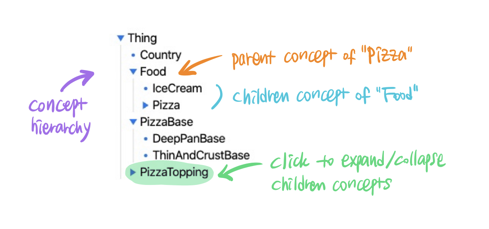
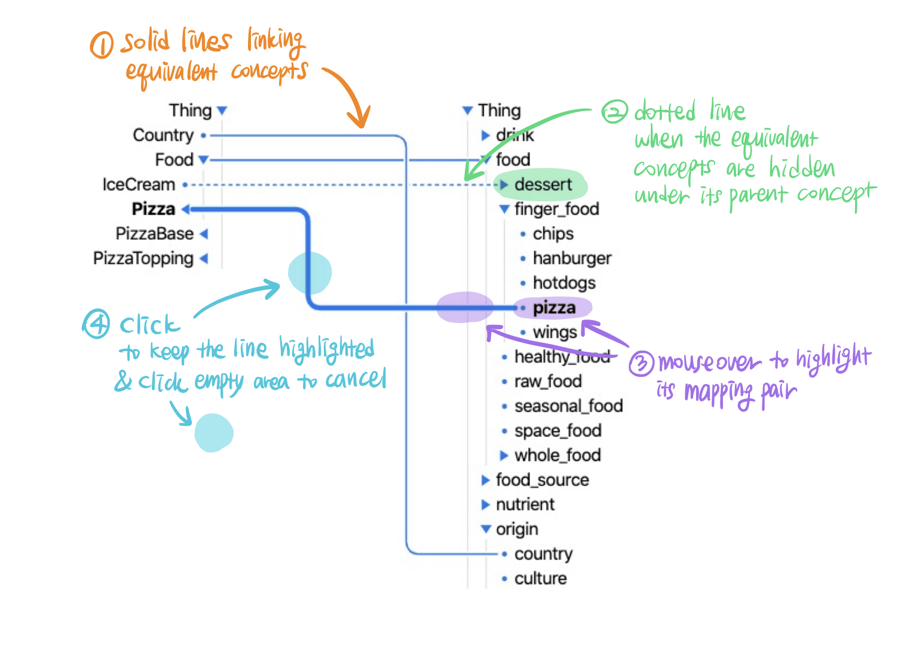

Tutorial
Ontology / Class
- Here is a structured dataset. Let’s call it ontology.
- The example is visualizing a conceptual model of pizza, the “ontology” of pizza.
- In the example, “Pizza” is a type of “Food”.
- And also, “Food” is a type of “Thing”.
- Let’s call those concepts classes of the ontology.

Mapping
- Here are two ontologies visualized side by side.
- Classes with same meaning between ontologies are connected.
- Let’s call the connection mapping.
- “Pizza” on the left ontology is mapped to “pizza” on the right ontology.
- A line is showing the mapping between “Pizza” and “pizza”.
- The lines are showing the mappings.

Ok, now what will I do?
- You will see a visualization of mappings between two ontologies about “conference”
- Complete a task about the mappings using the visualization.